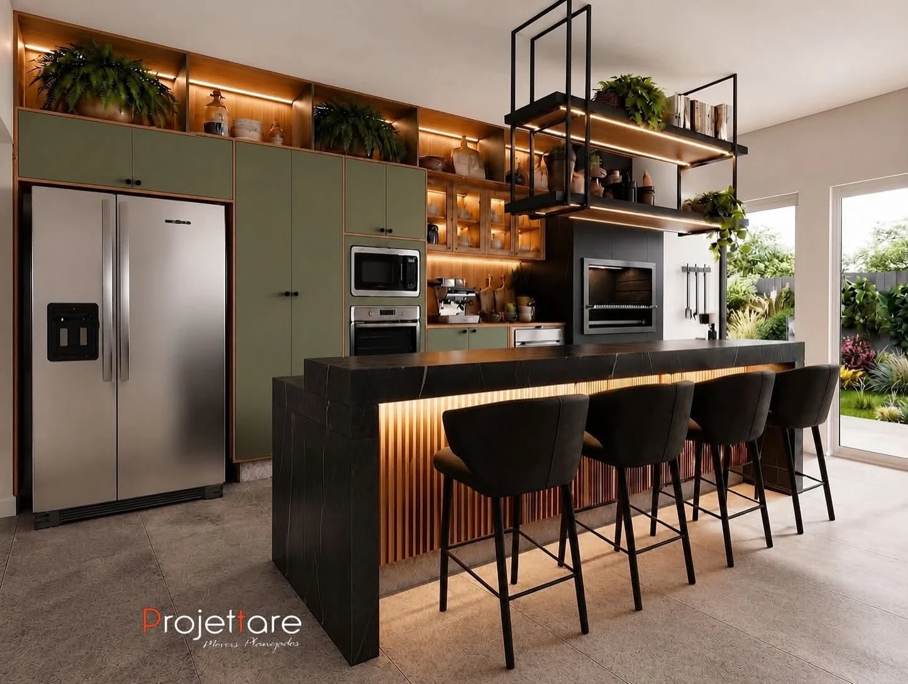
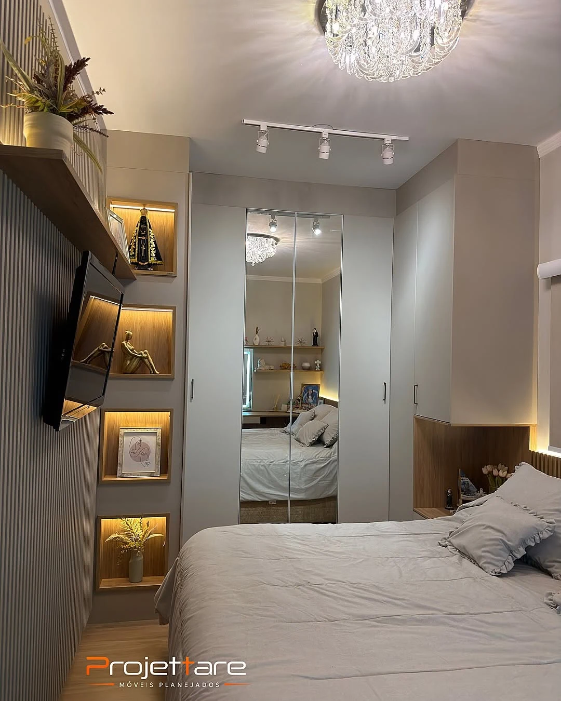
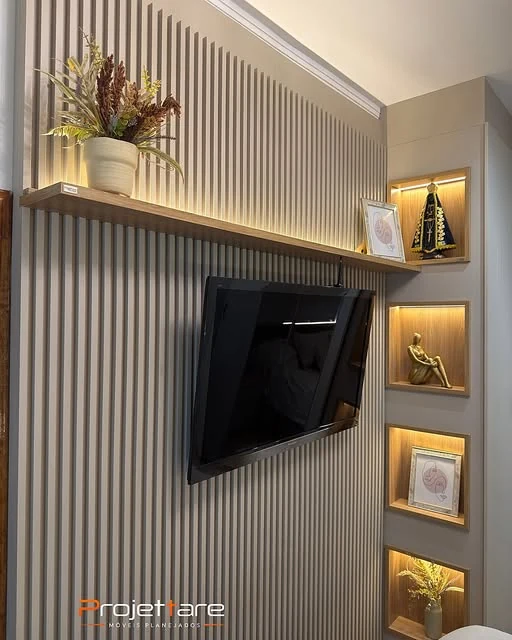
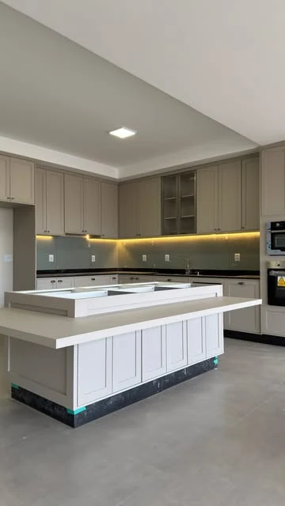
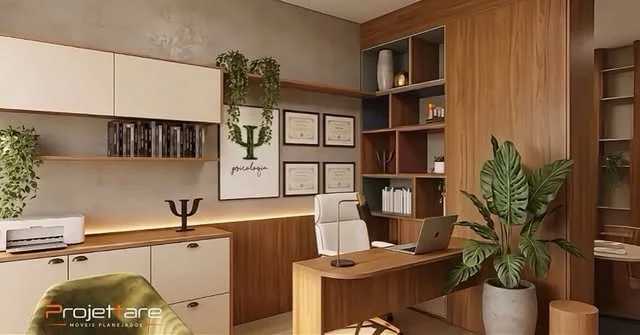
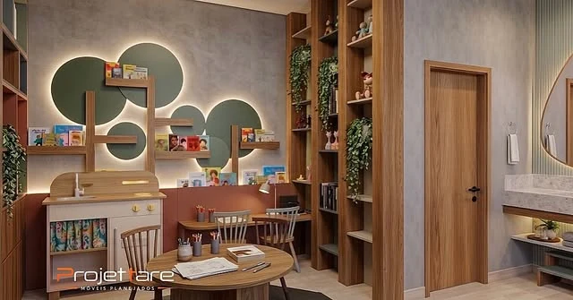
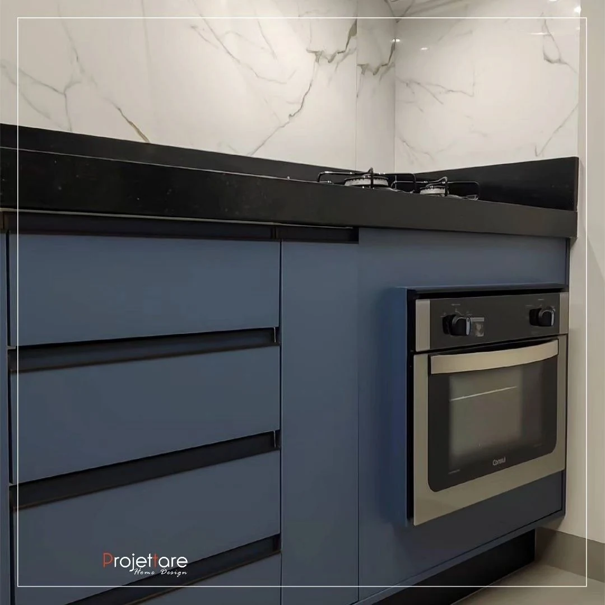
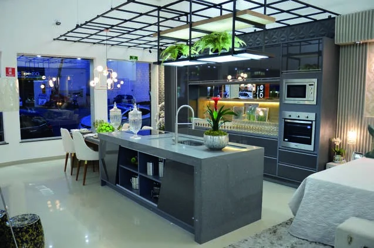

01 / CONVIVER
Visualização de projetoOLÍMPIA, SP & REGIÃO
Móveis planejados que aproximam a sua casa da vida que acontece nela.
Quero planejar meu ambiente Explorar projetos
Um lugar para reunir. Um canto para desacelerar. Espaço para o que você precisa guardar. O seu ambiente começa no seu jeito de viver.

PLANEJADOS. SOB MEDIDA. PARA VOCÊ.
A Projettare é uma loja de móveis planejados em Olímpia. A proposta é atender às necessidades de cada família com soluções sob medida.
O planejamento conecta organização, circulação e escolhas de acabamento. Para que cada móvel tenha um lugar — e cada lugar faça sentido.
Vamos conversar sobre o seu espaçoFotografias e visualizações de projetos publicados nos canais oficiais da Projettare.
Portfólio no Instagram




O próximo ambiente pode começar com a sua ideia.
Conte o que você tem em menteUm planejamento que começa pela função do ambiente e encontra a expressão da sua personalidade.
Mais espaço para preparar, guardar e compartilhar. A disposição dos móveis pode aproximar os pequenos rituais do dia a dia.
Planejar minha cozinhaGuardar com organização e descansar com conforto. Armários e painéis pensados para conversar com as proporções do quarto.
Planejar meu dormitórioO lugar de estar junto também precisa funcionar. Nichos, painéis e superfícies de apoio ajudam a compor uma rotina mais organizada.
Planejar minha salaUm lugar para se concentrar, criar e receber. O mobiliário pode conectar armazenamento, circulação e a linguagem do seu negócio.
Planejar meu espaço de trabalhoMóveis planejados sob medida. Uma escolha que considera as dimensões do ambiente e as necessidades de quem o utiliza.
Loja em Olímpia e atendimento pelo WhatsApp. Um canal direto para apresentar suas ideias e esclarecer os detalhes do projeto.
A Projettare anuncia garantia de fábrica de cinco anos em seu canal oficial. Consulte a equipe sobre cobertura e condições.
Não é preciso ter todas as respostas. Estas informações ajudam a iniciar a conversa sobre seu projeto.
Qual ambiente você quer transformar? O que faz falta hoje? Compartilhe como você imagina usar esse espaço.
Fotos, medidas aproximadas ou a planta ajudam a explicar o ambiente. Leve também as referências que você gosta.
Converse com a equipe sobre possibilidades, acabamentos, orçamento e condições antes de decidir.
Entre em contato pelo WhatsApp da Projettare e indique o ambiente que deseja planejar. Se tiver fotos, medidas ou uma planta, compartilhe com a equipe para orientar a conversa.
Os canais da Projettare apresentam cozinhas, áreas gourmet, dormitórios, painéis, salas e ambientes de trabalho e comércio. Consulte a equipe sobre a solução que você precisa.
A empresa informa atendimento em Olímpia e região. Envie sua cidade e a localização do imóvel pelo WhatsApp para confirmar a disponibilidade para o seu projeto.
Você pode começar a conversa apresentando o ambiente e suas necessidades. Pergunte à equipe como funciona o levantamento de medidas e quais informações serão necessárias para desenvolver o projeto.
Solicite essas informações diretamente à equipe para o seu projeto. Confirme o orçamento, o prazo e as condições comerciais antes da contratação.
O canal oficial da Projettare anuncia garantia de fábrica de cinco anos. A equipe poderá esclarecer quais produtos e situações são cobertos e apresentar as condições aplicáveis.
A SUA IDEIA JÁ É UM COMEÇO.
Conte para a Projettare. O próximo passo é uma conversa sobre você e o seu ambiente.

O WhatsApp abre com uma mensagem pronta.
Você pode revisá-la antes de enviar.